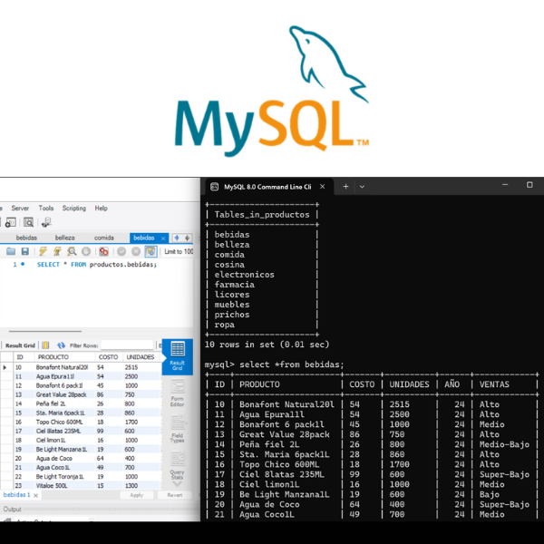

"Bienvenidos a mi portafolio"
Mi nombre es Nancy Alondra Testas Ascención soy Ingeniera en Comunicación con experiencia en programación de bases de datos y desarrollo de páginas web. Actualmente, estoy enfocada en expandir mi experiencia en las áreas de programación y telecomunicaciones, con la meta de desarrollarme profesionalmente en el sector tecnológico.
HABILIDADES
Algunas de mis habilidades técnicas son el desarrollo de bases de datos a través de MySQL, la programación de páginas web con HTML y CSS, así como también la edición de video con el programa Davinci Resolve en donde realizó edicciones de video para páginas web como también para redes sociales como, TikTok y Instagram.
Diseños de Páginas
Estos son algunos diseños de Páginas Web.
Diseños para Páginas y Redes Sociales

PROGRAMACIÓN
Aquí puedes encontrar más sobre desarrollos de la programación.